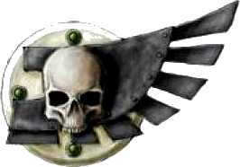

Angels of Absolution
| Angels of Absolution | |
|---|---|
 Heraldry of the Angels of Absolution Artwork © Games Workshop | |
| Founding | Second Founding (c. 021.M31) |
| Progenitor | Dark Angels (Lion El'Jonson) |
| Homeworld | Allhallow |
| Fortress-monastery | Soul's Well |
| Chapter Master | Master-Castellan Moddren |
| Allegiance | Imperium of Mankind; one of the Unforgiven |
| Colours | Bone-white and black |
| Notable battles | |
| Corinth Crusade (698–705.M41), Siege of Vraks (830.M41), Battle of the Caliban System (998.M41), Thirteenth Black Crusade (999.M41) | |
The Angels of Absolution are a loyal Space Marine Chapter of the Adeptus Astartes, a successor of the Dark Angels raised in the Second Founding. They are one of the Unforgiven, the Chapters that share the Dark Angels' secret, but they refuse the name. They hold that the sins of their forebears were washed away in the Fall of Caliban ten thousand years ago, and that they have earned the absolution of the Emperor. This stance causes friction when they fight alongside their parent Chapter and its other successors.[1]
In doctrine and temperament they remain close to the Dark Angels. They still hunt the Fallen, but as a duty of justice and vengeance rather than a need for redemption.[1]
History
[edit]Origins and the Fall of Caliban
[edit]The Angels of Absolution were raised when the Legions were divided into Chapters by the Second Founding, c. 021.M31, from the gene-seed of the Dark Angels. They are close to their parent in organisation and culture and have fought alongside it in many joint operations. Their armour is bone-white, which the Chapter says shows that its sin was cleansed. They regard the duty of hunting the Fallen, those who rebelled against the Lion, as a matter of justice to the Emperor.[1]
Wars of the Imperium
[edit]Some Inquisitorial studies place the Chapter among the forces that crushed the Chaos cult risings of Vengeance from the Void in the 32nd millennium, with the Minotaurs, Carcharodons and Death Eagles. Others note that the Founding dates of the Chapters named make this impossible, and call the event conjecture.[1][a] In 302.M36 the Chapter was among the first to take arms against Cardinal Bucharis and his splinter state at Galthamor in the Plague of Unbelief, fighting beside the Executioners, Raven Guard and Space Wolves at Nova Sulis.[1]
In the 41st millennium the Chapter's Second Company worked with the Dark Angels' Ravenwing on Archangel VII, hunting a band of Fallen and their followers at the north pole of the death world. A joint strike by Deathwing and the Angels of Absolution's First Company took their fortress after two days and the loss of twelve Terminators between them. One Fallen was killed and two taken to The Rock. The Chapter fought in the Corinth Crusade, 698–705.M41, against the Charadon Orks.[1]
In 830.M41, at the request of the Supreme Grand Master Azrael, they sent a task force to the final battle of the Siege of Vraks. Master Yafrir of the Fourth Company and the Interrogator-Chaplain Belphegor of the Dark Angels went to take the Alpha Legion leader Arkos the Faithless and destroy his flagship Anarchy's Heart, after hard negotiation of the terms of their service. Belphegor led a Drop Pod assault on the Basilica of Saint Leonis while Yafrir led an armoured column from the Cardinal Gate.[1]
In 998.M41 the Chapter joined the Dark Angels and other Unforgiven Chapters against a Death Guard plague fleet and a warfleet of the Fallen at the Battle of the Caliban System. The following year all ten companies took part around the Eye of Terror in the Thirteenth Black Crusade. In the Era Indomitus a psychic plague struck their homeworld Allhallow, and the Dark Angels are said to have worked secretly with the T'au to purge it before it spread.[1][2]
Organisation and beliefs
[edit]The Chapter follows the Dark Angels' pattern and so only partly complies with the Codex Astartes. Like the other Unforgiven, it has formations similar to the Deathwing and Ravenwing, though not under those names. The Second Company works with the Dark Angels' counterpart in the hunt for the Fallen. Its Inner Circle, the keepers of the secret of the Fall, is called the Hidden Brotherhood.[1]
Notable members
[edit]- Master-Castellan Moddren: present Chapter Master.
- Yafrir: Master of the Fourth Company at Vraks, who often led from his own Land Raider.
- Septimus: Apothecary serving the Deathwatch in the Jericho Reach.
Timeline
[edit]| Date | Event |
|---|---|
| c. 021.M31 | Second Founding; Angels of Absolution raised |
| M32 | Vengeance from the Void (disputed) |
| 302.M36 | Nova Sulis; Plague of Unbelief |
| 698–705.M41 | Corinth Crusade |
| M41 | Archangel VII persecution |
| 830.M41 | Siege of Vraks; Yafrir's Fourth Company |
| 998.M41 | Battle of the Caliban System |
| 999.M41 | Thirteenth Black Crusade |
| M42 | Purge of Allhallow |
See also
[edit]Notes
[edit]- ^ The date of Vengeance from the Void is given only as "ca. M32".
References
[edit]- ^ a b c d e f g h i Kelly, Phil. War of Secrets (novel). Black Library, Chs. 2, 8. Codex Adeptus Astartes - Dark Angels (8th Edition), pp. 11, 18, 37, 45. Games Workshop.
- ^ Codex: Dark Angels (7th Edition) (Digital Edition), pp. 47, 170. Games Workshop. Codex: Dark Angels (4th Edition), pp. 73, 75. Games Workshop.